Hydrat to związek chemiczny zawierający wodę w swojej budowie o określonej stechiometrii. Hydrat można zapisać jako
\[zw_{bezw}·xH_{2}O\]
Możemy go sobie wyobrazić, jako cząsteczkę związku bezwodnego otoczonego przez x cząsteczek wody. Mogą również wystąpić hydraty, w których składzie znajduje się więcej niż jedna sól, np.
\[Azw_{A}·Bzw_{B}·xH_{2}O\]
\[NaCl·3KCl·10H_{2}O\]
Jak również związki typu hydratów, w których zamiast cząsteczki wody występują inne cząsteczki rozpuszczalnika,np. dla amoniaku takie związki zwane są amoniakatami.
\[CuCl_{2}·4NH_{3}\]
Ogólnie symbol mnożenia (gwiazdka lub kropka) między w zapisie między związkami znaczy wiązanie innego typu niż kowalencyjne, stechiometrię możemy ustalić z stosunku cząsteczek w składzie związku. Najczęściej występują w hydratach to wiązania koordynacyjne lub wiązania wodorowe
Podstawową, zerową zasadą jest to, że obliczenia związane z hydratami możemy wykonywać klasycznie, przez obliczenia moli i przekształcania moli na interesujące nas parametry, zgodnie z stechiometrią ewentualnych reakcji czy innymi rzeczami związanymi z zadaniem. Jest to szczególnie przydatna metoda w przypadku występowania jakiegoś nietypowego układu bądź zadania lub w przypadku, w których występuje reakcja pomiędzy hydratami – wtedy i tak nie uciekniemy od obliczeń molowych. Jedyna różnica polega na tym, iż muszę brać całkowitą masę molową hydratu jako sumę mas molowych wszystkich składników występujących w tym hydracie.
Rozważmy zadanie:
Oblicz stężenie jonów \(Cl^{-}\) po rozpuszczeniu 10 g hydratu \(NaCl·3KCl·10H_{2}O\) i dolaniu wody do objętości \(500cm^{3}\)
Na początku obliczam mole tego hydratu:
\[n_{NaCl·3KCl·10H_{2}O} = \frac{m}{M} = \frac{10}{M_{NaCl·3KCl·10H_{2}O}} = \frac{10}{(23 + 35.5) + 3·(39 + 35.5) + 10·18} = 0.02164\]
Kolejno obliczam ile będę miał moli NaCl i KCl:
Dla \(NaCl\) jeden hydrat zawiera jedną taką cząsteczkę, a więc ilość moli będzie taka sama:
\[n_{NaCl} = n_{hydrat} = 0.02164\]
Ilość moli \(KCl\) będzie trzy razy większa od ilości moli hydratu bo jeden hydrat zawiera 3 cząsteczki:
\[n_{KCl} = 3·n_{hydrat} = 3·0.02164 = 0.06492\]
Oczywiście podczas dysocjacji tych związków będę uzyskiwał tyle jonów \(Cl^{-}\) ile mam \(NaCl\) oraz \(KCl\) :
\[NaCl \rightarrow Na^{+} + Cl^{-}\ \ \ \ \ \ \ \ \ \ \ KCl \rightarrow K^{+} + Cl^{-}\]
\[n_{Cl^{-}}^{NaCl} = 0.02164;n_{Cl^{-}}^{KCl} = n_{KCl} = 0.06492\]
Sumaryczna ilość moli \(Cl^{-}\) wynosi:
\[n_{Cl^{-}} = n_{Cl^{-}}^{NaCl} + n_{Cl^{-}}^{KCl} = 0.06492 + 0.02164 = 0.08656\]
Stężenie jonów chlorkowych zatem to:
\[\left\lbrack Cl^{-} \right\rbrack = \frac{n}{V} = \frac{0.08656}{0.5} = 0.17312\]
Przykładem zadania nietypowego jest zadanie:
W laboratorium znajduje się mieszanina dwóch hydratów: \(NiCl_{2}·2H_{2}O\) i \(NiCl_{2}·6H_{2}O\) , w której masowa zawartość procentowa niklu wynosi \(29.0\%\) . Rozpuszczalność bezwodnego chlorku niklu (II) w wodzie wynosi w temperaturze 20°C wynosi 62.5g
Oblicz masę (w gramach) opisanej mieszaniny hydratów, którą należy użyc do przygotowania 100g nasyconego wodnego roztworu chlorku niklu (II) w temperaturze 20°C.
Jest to przykład zadania nietypowego – dwa hydraty, mieszanina; więc lepiej jest je rozwiązywać przez mole. Jedyną daną i punktem rozpoczęcia zadania jest masa roztworu:
\[m_{R} = 100g\]
Używając rozpuszczalności oraz potrójnej proporcji, mogę obliczyć ile wynosi masa \(NiCl_{2}\) w roztworze:
\[NiCl_{2} - - - H_{2}O - - - RR\]
\[62.5 - - - 100 - - - 162.5\]
\[m_{NiCl_{2}} - - - m_{H_{2}O} - - - 100\]
\[m_{NiCl_{2}} = \frac{100·62.5}{162.5} = 38.46\]
Kolejno najłatwiej jest obliczyć mole \(NiCl_{2}\) i przyrównać je do moli niklu \(Ni\) :
\[n_{Ni} = n_{NiCl_{2}} = \frac{m_{NiCl_{2}}}{M_{NiCl_{2}}} = \frac{38.46}{58.69 + 2·35.45} = 0.2968\]
Mam wówczas masę jonów niklu w roztworze:
\[m_{Ni} = 0.2968·58.69 = 17.42g\]
Wówczas używam zawartości procentowej \(Ni\) :
\[\%_{Ni} = \frac{m_{Ni}}{m_{mieszaniny}^{hydratow}} = \frac{17.42}{m_{mieszaniny}^{hydratow}} = 0.29\]
Co po rozwiązaniu daje:
\[m_{mieszaniny}^{hydratow} = \frac{17.42}{0.29} = 60g\]
Rozpuszczanie hydratu w wodzie jest procesem, w którym cząsteczki wody normalnie przyłączone do substancji bezwodnej odrywają się. Wody pochodzące z hydratu są nierozróżnialne z cząsteczkami wody, które dodaliśmy do roztworu celem rozpuszczenia hydratu. Wynika z tego, iż roztwór, który uzyskamy przez rozpuszczenie hydratu w wodzie i roztwór, który uzyskamy przez rozpuszczenie substancji bezwodnej w wodzie są identyczne pod warunkiem, iż sumaryczne masy wody i soli bezwodnej są takie same. Innymi słowy, jeżeli masy soli bezwodnej i wody są takie same to nie jest ważny sposób przyrządzenia roztworu, liczy się efekt końcowy. Ogólnie hydrat w wodzie nie istnieje – jest zdysocjowany, natomiast czasem spotyka się obliczanie masy hydratu w roztworze, jednak jest to tylko koncept umożliwiający łatwiejsze przeprowadzanie obliczeń.
Ogólnie najlepiej hydraty jest zapisywać w postaci takiej, iż jest na jedną cząsteczkę soli bezwodnej:
\[\text{ }\mathbf{1}zw_{bezw}·xH_{2}O\]
W przypadku, w którym hydrat jest zapisany z innym współczynnikiem niż jeden przy soli należy zapisać go, tak aby kategorycznie była jedynka dla związku bezwodnego, dzieląc inne współczynniki przez ten współczynnik:
\[2CaSO_{4}·1H_{2}O = CaSO_{4}·\frac{1}{2}H_{2}O\]
Dla tak zapisanego hydratu można wyprowadzić tzw. wzory hydratowe – czyli wzory łączące masy związku bezwodnego, wody związanej w tym hydracie oraz masę hydratu z sobą przez masy molowe i współczynniki stechiometryczne w hydracie. Dla zapisanego tak hydratu
\[\mathbf{1}zw_{bezw}·xH_{2}O\]
Wzory mają postać:
\[\frac{m_{zwbezw}}{m_{H_{2}O}^{zw}} = \frac{M_{zwbezw}}{xM_{H_{2}O}^{\ }}\]
\[\frac{m_{zwbezw}}{m_{hydrat}} = \frac{M_{zwbezw}}{M_{hydrat}}\]
\[\frac{m_{H_{2}O}^{zw}}{m_{hydrat}} = \frac{xM_{H_{2}O}^{\ }}{M_{hydrat}}\]
Te wzory wynikają wprost z moli bialnsumol
\[n_{zwbezw} = \frac{m_{zwbezw}}{M_{zwbezw}}\]
\[n_{hydrat} = \frac{m_{hydrat}}{M_{hydrat}}\]
Dla zapisu \(\mathbf{1}zw_{bezw}·xH_{2}O\) ilość moli związku bezwodnego jest równa ilości moli hydratu:
\[n_{zwbezw} = n_{hydrat}\]
Po podstawieniu daje to:
\[\frac{m_{zwbezw}}{M_{zwbezw}} = \frac{m_{hydrat}}{M_{hydrat}}\]
Co po wymnożeniu daje:
\[\frac{m_{zwbezw}}{m_{hydrat}} = \frac{M_{zwbezw}}{M_{hydrat}}\]
Ewentualnie hydrat możemy rozbijać potrójną proporcją:
\[zw_{bezw} - H_{2}O^{zw} - hydrat\]
\[M_{zwbez} - xM_{H_{2}O} - M_{hydrat}\]
\[m_{zwbez} - m_{H_{2}O} - m_{hydrat}\]
analogicznie do rozpuszczalności, czego kategorycznie nie polecam z uwagi na to, że w zadaniach występują często trzy rodzaje wody i tym samym bardzo łatwo o błąd.
Rozpuszczalność hydratów dla roztworu nasyconego definiujemy jako
\[R_{hydrat} = \frac{m_{hydrat}}{m_{rozpuszcz}^{H_{2}O}}·100g\]
Gdzie
\(R_{hydrat}\) to rozpuszczalność hydratu,
\(m_{hydrat}\) - masa rozpuszczonego hydratu
\(m_{rozpuszcz}^{H_{2}O}\) - masa wody rozpuszczalnikowej
Jednocześnie należy podkreślić, iż zarówno rozpuszczalność hydratu \(R_{hydrat}\) i rozpuszczalność związku bezwodnego \(R_{zwbezw}( = \frac{m_{zwbezw}}{m_{cala}^{H_{2}O}}100)\) oraz stężenie procentowe roztworu nasyconego \(c_{p}\) to trzy różne wartości, ale powiązane ze sobą bez względu na masę użytych związków. Możliwe jest przeliczanie tych wielkości względem siebie przez założenia. W praktyce robimy to zakładając jedną z mas i obliczając resztę. W praktyce jeżeli masz jedną wielkość z \(R_{hydrat};\ R_{zwbezw};\ c_{p}^{nas}\) jesteśmy w stanie obliczyć wszystkie trzy.
W zadaniach z hydratów występuje problem z wodą – możemy zdefiniować w nich trzy rodzaje wody:
\(m_{H_{2}O}^{zw}\) → woda związana, czyli woda, która siedzi w hydracie (ją wprowadziliśmy razem z hydratem)
\(m_{H_{2}O}^{rozp}\) → woda która dodaliśmy dodatowo poza hydratem
\(m_{H_{2}O}^{cala}\) → cała woda, która znajduje się w roztworze, w praktyce jest to suma mas wody wprowadzonej dodatkowo oraz mas jest \(= m_{H_{2}O}^{zw} + m_{H_{2}O}^{rozp}\)
Dla roztworu, w którym znajduje się tylko jedna substancja, która dodatkowo tworzy hydrat możemy zapisać następujący graf, poniżej umieściłem na tym grafie często spotykane wzory i zależności między składnikami roztworu
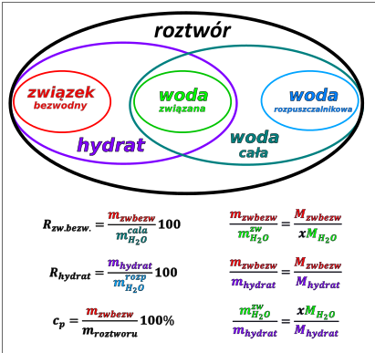
Oczywiście, tak jak zaprezentowano na grafie,
\[m_{hydrat} = m_{zw\ bezw} + m_{H_{2}O}^{zw}\]
\[m_{H_{2}O}^{cała} = m_{H_{2}O}^{zw} + m_{H_{2}O}^{rozp}\]
\[m_{roztworu} = m_{zw\ bezw} + m_{H_{2}O}^{zw} + m_{H_{2}O}^{rozp}\]
Graf ten ogólnie jest dobrze zrobić dla każdego zadania, w którym występuje hydrat, jest on szczególnie przydatny dla zadań, w których mamy przeliczyć rozpuszczalności hydratu, związku bezwodnego i stężenie procentowe roztworu nasyconego względem siebie.
Kwas etanodiowy o wzorze \((COOH)_{2}\) jest najprostszym kwasem dikarboksylowym, którego rozpuszczalność w wodzie w temperaturze 20°C jest równa 9.52 g bezwodnego kwasu w 100 g wody.
Oblicz minimalną masę wody potrzebną do rozpuszczenia 14.0 gramów hydratu kwasu etanodiowego o wzorze \((COOH)_{2}\ · \ 2H_{2}O\) w temperaturze 20°C. Wynik końcowy podaj w gramach i zaokrąglij do jedności.
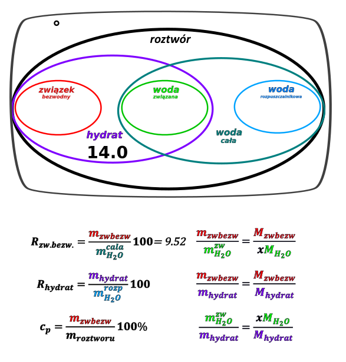
Mamy rozpuszczalność kwasu, i jednocześnie znamy jedną z mas – masę hydratu. Jeżeli znamy jedną z mas kategorycznie nie powinniśmy nic zakładać –jedna z mas definiuje inne. W tym wypadku najlepiej będzie rozbić ten hydrat na masę związku bezwodnego i masę wody związanej. Zrobimy to używając wzorów hydratowych:
\[\frac{m_{(COOH)_{2}}}{m_{hydrat}} = \frac{M_{(COOH)_{2}}}{M_{(COOH)_{2}·H_{2}O}}\]
\[\frac{m_{(COOH)_{2}}}{14} = \frac{2·(12 + 32 + 1)}{2·(12 + 32 + 1) + 18}\]
\[m_{(COOH)_{2}} = \frac{2·(12 + 32 + 1)}{2·(12 + 32 + 1) + 18}·14 = 11.67\]
Masa wody związanej wynosi wówczas:
\[m_{H_{2}O}^{zw} = 14 - 11.67 = 2.33\]
Znając masę związku bezwodnego mogę obliczyć jaka powinna być minimalna całkowita masa wody potrzebna do rozpuszczenia jej, wykorzystując wzór na rozpuszczalność:
\[R_{(COOH)_{2}} = \frac{m_{(COOH)_{2}}}{m_{H_{2}O}^{całej}}100\]
\[9.52 = \frac{2.33}{m_{H_{2}O}^{całej}}·100\]
\[m_{H_{2}O}^{całej} = \frac{2.33}{9.52}·100\]
\[m_{H_{2}O}^{całej} = 24.4\]
Graf wygląda wówczas następująco:
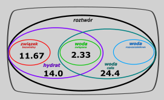
Masę dodanej wody mogę wówczas obliczyć jako różnicę mas całej wody i wody związanej:
\[m_{H_{2}O}^{rozp} = m_{H_{2}O}^{cala} - m_{H_{2}O}^{zw} = 24.4 - 2.33 = 22.07 \approx 22g\]
Co stanowi odpowiedź na pytanie
Węglan sodu jest solą dość dobrze rozpuszczalną w wodzie. Podczas ochładzania jej gorącego roztworu nie powstaje sól bezwodna, ale wydzielają się hydraty, których skład zależy od temperatury. W temperaturze 20°C w równowadze z roztworem nasyconym pozostaje dekahydrat o wzorze \(Na_{2}CO_{3} \bullet 10H_{2}O\) . Rozpuszczalność dekahydratu węglanu sodu w wodzie w tej temperaturze jest równa \(21.5\) g w 100 g wody.
Oblicz rozpuszczalność węglanu sodu (wyrażoną w gramach substancji na 100 gramów wody) w opisanych warunkach w przeliczeniu na sól bezwodną.
Przeliczenie rozpuszczalność hydratu na rozpuszczalność soli bezwodnej → jedno drugie to stosunki → trzeba założyć jakąś masę. W naszym wypadku najłatwiej jest założyć masę hydratu, albo masę wody rozpuszczalnikowej z uwagi na użyty
Założenie: masa hydratu \(Na_{2}CO_{3}·10H_{2}O = 100g\)
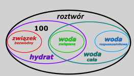
Z założonej danej mogę obliczyć masę wody rozpuszczalnikowej, używając wzoru na rozpuszczalność hydratu:
\[R_{hydrat} = \frac{m_{hydrat}}{m_{H_{2}O}^{rozp}}100 = 21.5\]
\[\frac{100}{m_{H_{2}O}^{rozp}}100 = 21.5\]
\[m_{H_{2}O}^{rozp} = 465.12\]
Kolejno wiedząc, jaki jest wzór hydratu mogę obliczyć jaka jest masa związku bezwodnego i wody związanej w tym hydracie używając wzorów rozpuszczalnikowych:
\[\frac{m_{Na_{2}CO_{3}}}{m_{hydrat}} = \frac{M_{Na_{2}CO_{3}}}{M_{hydrat}}\]
\[\frac{m_{Na_{2}CO_{3}}}{100} = \frac{23·2 + 12 + 48}{23·2 + 12 + 48 + 10·18}\]
\[m_{Na_{2}CO_{3}} = 37.1\]
Masę wody związanej mogę obliczyć z proporcji, ale również łatwiej obliczyć z różnicy
\[m_{H_{2}O}^{zw} = m_{hydrat} - m_{Na_{2}CO_{3}} = 100 - 37.1 = 62.9\]
Po umieszczeniu obliczonych wartości na grafie ( \({m_{zw.bezw.};m}_{H_{2}O}^{zw};m_{H_{2}O}^{rozp})\) prezentuje się on następująco:
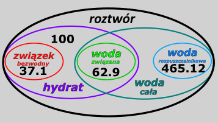
Z łatwością teraz policzymy masę całej wody jako sumę masy wody związanej i rozpuszczalnikowej:
\[m_{H_{2}O}^{sum} = 465.12 + 62.9 = 528.02\]
\[m_{Na_{2}CO_{3}} = 37.1\]
Rozpuszczalność związku bezwodnego najłatwiej będzie policzyć z definicji, czyli dzieląc masę tegoż bezwodnego związku przez sumaryczną masę wody:
\[R = \frac{m_{Na_{2}CO_{3}}}{m_{H_{2}O}^{sum}} = \frac{37.1}{528.02}·100 = 7.02\frac{g}{100g_{H_{2}O}}\ \]
Zadanie to może wystąpić w postaci „odwróconej”:
Oblicz rozpuszczalność \(Na_{2}CO_{3}·10H_{2}O\) , jeżeli z tablic CKE wiesz, że rozpuszczalność bezwodnego \(Na_{2}CO_{3}\) wynosi \(21.5\frac{g}{100g_{H_{2}O}}\)
Tutaj najłatwiej jest założyć \(m_{zwbezw}\) albo \(m_{H_{2}O}^{calej}\) , gdyż wiedząc mając podaną rozpuszczalność wiemy, że te rzeczy są powiązanie z sobą wzorem: \(R_{zw.bezw} = \frac{m_{zwbezw}}{m_{H_{2}O}^{calej}}100\) , więc znając jedną wartość automatycznie znamy drugą. Założenie np. masy wody związanej bądź całej jest okazaniem skłonności masochistyczne -nieszczególnie jesteśmy w stanie cokolwiek z tego obliczyć. A jak dobrze wiemy skłonności masochistycznych krępujemy się bardzo na maturze.
W tym wypadku zakładam masę związku bezwodnego jako \(m_{zwbezw} = 50g\) . Masę tę używam do obliczenia masy całej wody ze wzoru na rozpuszczalność:
\[\frac{m_{zwbezw}}{m_{H_{2}O}^{calej}}100 = 21.5\]
\[\frac{50}{m_{H_{2}O}^{calej}}100 = 21.5\]
\[m_{H_{2}O}^{calej} = 232.6\]
Dane umieszczam na grafi
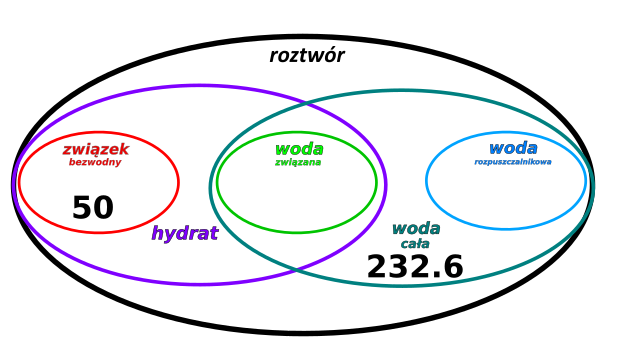
Do obliczenie rozpuszczalności hydratu potrzebuje fioletowej danej (masy hydratu) i niebieskie (masy wody rozpuszczalnikowej, a mam czerwoną (masa związku bezwodnego) i morskie (masa całej wody).
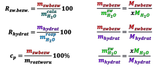
Analizując wzory widzę, iż dana fioletowa (hydrat) jest związana z czerwoną (masa związku bezwodnego) wzorem hydratowym:
\[\frac{m_{zwbezw}}{m_{H_{2}O}^{zw}} = \frac{M_{zwbezw}}{xM_{H_{2}O}^{\ }}\]
\[\frac{\mathbf{m}_{\mathbf{zwbezw}}}{\mathbf{m}_{\mathbf{hydrat}}}\mathbf{=}\frac{\mathbf{M}_{\mathbf{zwbezw}}}{\mathbf{M}_{\mathbf{hydrat}}}\]
\[\frac{m_{H_{2}O}^{zw}}{m_{hydrat}} = \frac{xM_{H_{2}O}^{\ }}{M_{hydrat}}\]
Wykorzystujemy wzór:
\[\frac{m_{Na_{2}CO_{3}}}{m_{Na_{2}CO_{3}·10H_{2}O}} = \frac{M_{Na_{2}CO_{3}}}{M_{Na_{2}CO_{3}·10H_{2}O}}\]
Po wstawieniu danych dostajemy:
\[\frac{50}{m_{Na_{2}CO_{3}·10H_{2}O}} = \frac{23·2 + 12 + 48}{23·2 + 12 + 48 + 18·10}\]
\[m_{Na_{2}CO_{3}·10H_{2}O} = 134.9\]
Znając masę związku bezwodnego i masę hydratu można obliczyć masę wody związanej, jako różnice tych dwóch wartości:
\[m_{H_{2}O}^{zw} = m_{Na_{2}CO_{3}·10H_{2}O} - m_{Na_{2}CO_{3}} = 134.9 - 50 = 84.9g\]
I kolejno znając masę wody związanej i masę całej wody możemy obliczyć masę wody rozpuszczalnikowej – tej dodatkowo dodanej, również jako różnicę:
\[m_{H_{2}O}^{rozp} = m_{H_{2}O}^{cala} - m_{H_{2}O}^{zw} = 232.6 - 84.9 = 147.7\]
Graf po umieszczeniu wartości wygląda następująco:
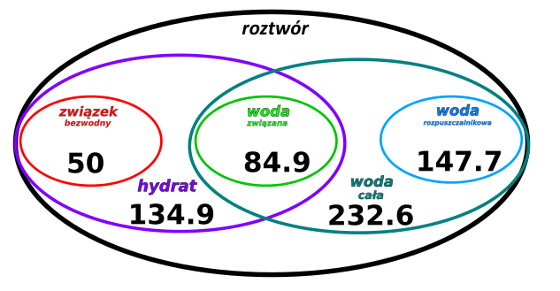
Rozpuszczalność hydratu możemy obliczyć wykorzystując wzór:
\[R_{hydratu} = \frac{m_{hydrat}}{m_{H_{2}O}^{rozp}}·100 = \frac{134.9}{147.7}·100 = 91.3\frac{g}{100g\ H_{2}O}\]
Kolejnym przykładem zadania na przeliczanie rozpuszczalności, stężeń itp. Itd. gest zadanie:
W temperaturze 20°C rozpuszczalność uwodnionego wodorosiarczanu(VI) sodu o wzorze \(NaHSO_{4}·H_{2}O\) jest równa 67 gramów w 100 gramach wody Oblicz, jaki procent masy roztworu nasyconego o temperaturze 20°C stanowi masa soli bezwodnej \(NaHSO_{4}\) .
W zadaniu mam podaną rozpuszczalność hydratu czyli stosunek masy hydratu i wody rozpuszczalnikowej. Nie mam żadnej 0 więcej najwygodniej będzie Jeną z nich założyć. Załóżmy, że \(m_{hydrat} = 100g\)
Na początku potrzebuje rozbić hydrat na masę soli bezwodnej i masę wody związanej. Najwygodniej jest tego dokonać wzorem hydratowym:
\[\frac{m_{zwbezw}}{m_{hydrat}} = \frac{M_{Na_{2}SO_{4}}}{M_{Na_{2}SO_{4}·H_{2}O}}\]
\[\frac{m_{zwbezw}}{100} = \frac{23·2 + 32 + 4·16}{23·2 + 32 + 4·16 + 18}\]
Masę wody związanej obliczamy oczywiście jako różnicę masy hydratu i związku bezwodnego:
\[m_{zwbezw} = 88.75 \rightarrow m_{H_{2}O}^{zw} = 100 - 88.75 = 11.25\]
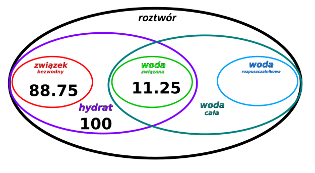
Chcąc kolejno obliczyć masę wody rozpuszczalnikowej używając rozpuszczalności hydratu:
\[R_{hydrat} = \frac{m_{hydrat}}{m_{H_{2}O}^{rozp}}·100\]
\[67 = \frac{100}{m_{H_{2}O}^{rozp}}·100\]
\[m_{H_{2}O}^{rozp} = \frac{100·100}{67} = 149.2\]
Wówczas z łatwością możemy obliczyć masę roztworu jako sumę mas hydratu i wody rozpuszczalnikowej:
\[m_{roztworu} = m_{hydrat} + m_{H_{2}O}^{rozp} = 100 + 149.2 = 249.2\]
Stężenie procentowe obliczamy ze wzoru:
\[\%_{Na_{2}SO_{4}} = \frac{m_{Na_{2}SO_{4}}}{m_{roztworu}} = \frac{88.75}{249.2} = 35.6\%\]
Kolejnym zadaniem, w którym dobrze jest wykorzystać zaprezentowany graf jest zadanie:
Chlorek wapnia tworzy rozpuszczalne hydraty o wzorze ogólnym \(CaCl_{2}·xH_{2}O\) . W zależności od temperatury w równowadze z roztworem nasyconym pozostają hydraty o różnych wartościach współczynnika \(x\) .
W temperaturze 40 °C jeden z hydratów chlorku wapnia rozpuszcza się w ilości 767.4 g na 100 g wody, a stężenie nasyconego roztworu chlorku wapnia wynosi 53.66% masowych.
Zadanie znowu rozpoczynam od założenia- gdyż nie mam podanej żadnej masy związku, a jedynie rozpuszczalność i stężenie.
Zakładam, że masa użytego hydratu to 100g:
\[m_{CaCl_{2}·nH_{2}O} = 100g\]
Wykorzystując daną o rozpuszczalności hydratu mogę obliczyć masę wody rozpuszczalnikowej:
\[R_{hydrat} = \frac{m_{CaCl_{2}·nH_{2}O}}{m_{H_{2}O}^{rozp}}100 = 767.4\]
\[\frac{100}{m_{H_{2}O}^{rozp}}100 = 767.4\]
\[m_{H_{2}O}^{rozp} = 13.0\]
Graf wygląda następująco:
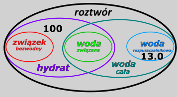
Kolejno znając masę wody rozpuszczalnikowej i masę hydratu mogę obliczyć masę roztworu jako sumę mas:
\[m_{roztw} = m_{CaCl_{2}·nH_{2}O} + m_{H_{2}O}^{rozp} = 100 + 13.0 = 113.0\]
Kolejno wykorzystując stężenie procentowe, mogę obliczyć masę bezwodnego \(CaCl_{2}\) :
\[c_{p} = \frac{m_{CaCl_{2}}}{m_{roztwt}}·100\% = 53.66\%\]
\[\frac{m_{CaCl_{2}}}{113.02}·100\% = 53.66\]
\[m_{CaCl_{2}} = 60.6\]
Znając masę związku bezwodnego i masę hydratu mogę obliczyć masę wody związanej jako różnicę mas:
\[m_{H_{2}O}^{zw} = 100 - 60.6 = 39.4\]
Po uzupełnieniu danych graf wygląda następująco:
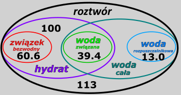
Wzór hydratu, a w zasadzie wartość \(x\) we wzorze \(CaCl_{2}·xH_{2}O\) najłatwiej jest ustalić wykorzystując jeden z wzorów hydratowych, w których ta wartość występuje:
\[\frac{m_{zwbezw}}{m_{H_{2}O}^{zw}} = \frac{M_{zwbezw}}{xM_{H_{2}O}}\]
Po wstawieniu danych oraz mas molowych dostajemy:
\[\frac{60.6}{39.4} = \frac{40 + 35.5·2}{x18}\]
\[x = \frac{111}{18}·\frac{39.4}{60.6} = 4\]
Czyli wzór hydratu to:
\[CaCl_{2}·4H_{2}O\ \]
Węglan sodu występuje w postaci soli bezwodnej oraz w postaci hydratu zawierającego 63% masowych wody. Obie formy rozpuszczają się w wodzie. Uwodniony węglan sodu tworzy bezbarwne kryształy, które podczas ogrzewania uwalniają wodę krystalizacyjną i rozpuszczają się w niej. Rozpuszczalność węglanu sodu (w przeliczeniu na sól bezwodną) w temperaturze 40°C jest równa 48.8 g na 100 g wody.
Hydrat ten możemy zapisać w postaci
\[Na_{2}CO_{3}·x\ H_{2}O\]
63% całego hydratu to woda związana w stosunku do masy całego hydratu – mogę to zapisać jako:
\[63\% = \frac{m_{H_{2}O}^{zw}}{m_{hydratu}}\]
Jednocześnie po przejrzeniu wzorów hydratowych, mogę zobaczyć, iż wyrażenie \(\frac{m_{H_{2}O}^{zw}}{m_{hydratu}}\) jest równe stosunkowi mas molowych:
\[\frac{m_{H_{2}O}^{zw}}{m_{hydratu}} = \frac{{xM}_{H_{2}O}^{\ }}{M_{hydratu}} = \frac{{xM}_{H_{2}O}^{\ }}{M_{Na_{2}CO_{3}} + {xM}_{H_{2}O}^{\ }}\]
Po wstawieniu wartości mas molowych
\[63\% = \frac{m_{H_{2}O}^{zw}}{m_{hydratu}} = \frac{xM_{H_{2}O}^{\ }}{M_{hydrat}} = \frac{x·18}{106 + x·18}·100\%\]
W tym wypadku dostajemy wyrażenie z jedną zmienną, rozwiązując je otrzymuje ilość wody w hydracie:
\[x = 10\]
Czyli wzór hydratu to:
\[Na_{2}CO_{3}·10H_{2}O\]
Alternatywne rozwiązanie tego zadania jest podobne do techniki ustalania wzoru sumarycznego z zawartość procentowej poszczególnych pierwiastków w związku:
Technika ta polega na napisaniu tabelki z składnikami hydratu, w pierwszych rzędzie umieszczam zawartości procentowe lub stosunku masowe poszczególnych związków:
| \[Na_{2}CO_{3}\] | \[H_{2}O\] | |
|---|---|---|
| Zawartość procentowa | \[37\] | \[63\] |
W kolejnym wierszu dzielę zawartości masowe przez masy molowe odpowiednich składników:
| \[Na_{2}CO_{3}\] | \[H_{2}O\] | |
|---|---|---|
| Zawartość procentowa | \[37\] | \[63\] |
| Stosunek względny | \[\frac{37}{M_{Na_{2}CO_{3}}} = \frac{37}{106} = 0.349\] | \[\frac{63}{M_{H_{2}O}} = \frac{63}{18} = 3.5\] |
W kolejnym wybieram najmniejszą z występujących wartości w ostatnim wierszu i dzielę wszystkie przez nią, w tym wypadku jest to \(0.349\)
| \[Na_{2}CO_{3}\] | \[H_{2}O\] | |
|---|---|---|
| Zawartość procentowa | \[37\] | \[63\] |
| Stosunek względny | \[\frac{37}{M_{Na_{2}CO_{3}}} = \frac{37}{106} = \mathbf{0.349}\] | \[\frac{63}{M_{H_{2}O}} = \frac{63}{18} = 3.5\] |
| Stosunek bezwględny | \[\frac{0.349}{\mathbf{0.349}}\mathbf{= 1}\] | \[\frac{3.5}{\mathbf{0.349}} = 10\] |
Uzyskany stosunek jest stosunkiem składników hydratu, czyli jego wzór to:
\[Na_{2}CO_{3}·10H_{2}O\]
Kolejny typ to badanie rozpuszczalności hydratów w innych temperaturach, rozważmy zadanie:
Na podstawie obliczeń rozstrzygnij, czy węglan sodu zawarty w opisanym hydracie ( \(Na_{2}CO_{3}·10H_{2}O\) ) całkowicie rozpuści się w wodzie krystalizacyjnej w temperaturze 40°C. Rozpuszczalność węglanu sodu (w przeliczeniu na sól bezwodną) w temperaturze 40°C jest równa 48.8 g na 100 g wody.
Zadanie to dotyczy rozpuszczalności – więc raczej wygodnie będzie je robić grafem, jednocześnie nie mamy podanej masy w zadaniu – czyli powinienem sobie ją założyć, w celu ułatwienia obliczeń. Najłatwiej jest założyć sobie masę hydratu – szybko, przy użyciu wzorów hydratowych będę mógł obliczyć masę soli bezwodnej i wody związanej
\[Na_{2}CO_{3}·10H_{2}O\]
Zakładam, że mam 100g hydratu \(m_{hydrat} = 100\)
\[\frac{m_{zwbezw}}{m_{hydrat}} = \frac{M_{zwbezw}}{M_{hydrat}}\]
\[\frac{m_{zwbezw}}{100} = \frac{106}{106 + 18·10}\]
\[m_{zwbezw} = \frac{106}{106 + 18·10}·100 = 37.06\]
Kolejno mogę obliczyć masę wody związanej jako różnicę mas hydratu i soli bezwodnej
\[m_{H_{2}O}^{zw} = 100 - 37.06 = 62.94\]
Graf rozpuszczalności przedstawia się następująco:
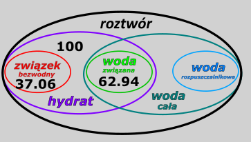
Problem jest z wodą rozpuszczalnikową – nie mam podanej jej masy. Tutaj z pomocą przychodzi nam zdrowe myślenie – jeżeli chce rozpuścić sól tylko w wodzie krystalizacyjnej – czyli w wodzie związanej, to masa wody rozpuszczalnikowej wynosi 0 g – po prostu nie używam tej wody.
Wówczas cała woda jest równa masie wody związanej:
\[m_{H_{2}O}^{cala} = m_{H_{2}O}^{zw} + m_{H_{2}O}^{rozp} = 62.94 + 0 = 62.94g\]
Wykorzystując podaną w zadaniu rozpuszczalność mogę powiedzieć, jaka masa \(Na_{2}CO_{3}\) powinna mi się rozpuścić w tej masie wody:
\[R = \frac{m_{Na_{2}CO_{3}}^{rozp}}{m_{H_{2}O}}·100 = 48.8\]
\[m_{Na_{2}CO_{3}}^{rozp} = 0.488·62.94 = 30.7\]
Czyli mamy 37.06 g. soli, a maksymalnie rozpuści mi się 30.7g. Wnioskiem jest że nie cały \(Na_{2}CO_{3}\) się rozpuści.
Zadania z hydratami mogą również być związane z zmianą stężenia na skutek dodawania lub krystalizacji hydratów – dla uproszczenia, zresztą tak jak w klasycznych zadaniach z rozpuszczalności mogą wymagać rysowania kolbek. Ogólna; żelazna zasada dotycząca tych zadań- rozbijamy stężenia i roztwory na masy wody (całkowitej) i masę związku bezwodnego i następnie bilansujemy, tak iż masy dodane każdego związku musza być równe masie końcowej tego związku.
Oblicz, ile gramów soli uwodnionej \(Na_{2}SO_{4}\ \bullet 10H_{2}O\) należy dodać do 100 g roztworu, w którym stężenie \(Na_{2}SO_{4}\) wynosi 6.0% masowych, aby – po uzupełnieniu wodą do 300 g – otrzymać roztwór tej soli o stężeniu 10%. W obliczeniach przyjmij, że masy molowe soli są równe: \(M_{Na_{2}SO_{4}}\) = 142 \(g\ \bullet \ mol^{–1}\) oraz \(M_{Na_{2}SO_{4}·10H_{2}O\ \ }\) 322 \(g\ \bullet \ mol^{–1}\)
W przypadku tego zadania nie ma nasycenia roztworu, a więc nie możemy korzystać ze wzorów na rozpuszczalność, ale nadal możemy robić graf, aby bilansować i nie pogubić się w masach.
Mamy dwa roztwory
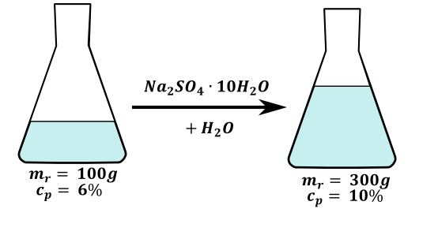
Dla roztworu początkowego
\[m_{Na_{2}SO_{4}}^{0} = 0.06·100 = 6g\ \ \ \]
\[m_{H_{2}O}^{0} = 100 - 6 = 94g\]
Dla roztworu końcowego
\[m_{Na_{2}SO_{4}}^{k} = 300·10\% = 30g;\]
\[m_{H_{2}O}^{k} = 270\]
Mogę obliczyć masę dodanego \(Na_{2}SO_{4}\) , jako różnicę mas końcowej i początkowej:
\[\Delta m_{Na_{2}SO_{4}} = m_{Na_{2}SO_{4}}^{k} - m_{Na_{2}SO_{4}}^{0} = 30 - 6 = 24\]
W zadaniu mamy odpowiedzieć, jaką masę hydratu \(Na_{2}SO_{4}·10H_{2}O\) powinniśmy dodać, a nie jaką masę soli bezwodnej mamy dodać. Powinniśmy przeliczyć obliczoną masę soli bezwodnej na masę hydratu. Najprościej to zrobić wzorem hydratowym łączącym masę hydratu z solą bezwodną.
\[\frac{m_{Na_{2}SO_{4}}}{m_{hydrat}} = \frac{M_{Na_{2}SO_{4}}}{M_{hydrat}}\]
\[\frac{24}{m_{hydrat}} = \frac{23·2 + 32 + 64}{23·2 + 32 + 64 + 10·18} = 0.441\]
\[m_{hydrat} = \frac{24}{0.441} = 54.42g\]
Chcąc dodatkowo wiedzieć ile wody musimy dodać powinniśmy to zrobić z bilansu masy roztworu. Całkowita masa roztworu końcowego równa jest sumie mas początkowego roztworu, dodanego hydratu i dodanej wody:
\[m_{r}^{k} = m_{r}^{0} + m_{hydrat} + m_{H_{2}O}^{doda}\]
Co po wstawieniu wartości liczbowych daje
\[300 = 100 + 54.42 + m_{H_{2}O}^{dod}\]
\[m_{H_{2}O}^{dod} = 145.58\]
Zadanie to można bardzo łatwo skomplikować usuwając człon związany z uzupełnieniem wodą do 300g
Oblicz, ile gramów soli uwodnionej
\(Na_{2}SO_{4}\ \bullet 10H_{2}O\)
należy
dodać do 100 g roztworu, w którym stężenie
\(Na_{2}SO_{4}\)
wynosi 6.0% masowych,
aby – po uzupełnieniu wodą do 300 g
– otrzymać roztwór tej
soli o stężeniu 10%. W obliczeniach przyjmij, że masy molowe soli są
równe:
\(M_{Na_{2}SO_{4}}\)
= 142
\(g\ \bullet \ mol^{–1}\)
oraz
\(M_{Na_{2}SO_{4}·10H_{2}O\ \ }\)
322
\(g\ \bullet \ mol^{–1}\)
Usunięcie tego członu powoduje, że nie znamy wtedy masy końcowej roztworu, co uniemożliwia proste obliczenie masy soli bezwodnej w roztworze końcowej. Najlepszą metodą jest obliczenie mas soli bezwodnej, wody oraz całego roztworu i wykorzystanie ich bilansu mas w celu uzyskania układu równań
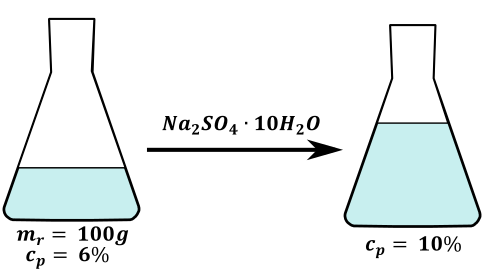
Roztwór początkowy
\[m_{soli}^{0} = 6g;\]
\[m_{H_{2}O^{całej}}^{0} = 94g;\]
\[m_{r}^{0} = 100g\]
Dodajemy hydrat, czyli zwiększamy zarówno masę soli bezwodnej o jej zawartość w hydracie \(m_{soli\ bezw}^{hydrat}\) , masę wody również o jej zawartość w hydracie \(m_{H_{2}O}^{hydrat}\) . Oczywiście zwiększa się masa roztworu o masę równą masie dodanego hydratu:
\[m_{soli}^{K} = m_{soli}^{0} + m_{soli}^{hydrat} = 6 + m_{soli}^{hydrat};\]
\[m_{H_{2}O}^{K} = m_{H_{2}O^{całej}}^{0} + m_{H_{2}O}^{hydrat} = 94 + m_{H_{2}O}^{hydrat};\]
\[m_{r}^{K} = m_{r}^{0} + m_{hydrat} = 100 + m_{hydrat}\]
Wykorzystując otrzymane wyrażenia dla roztworu po bilansie mas do wzoru na stężenie procentowe otrzymuję:
\[c_{P} = \frac{m_{soli}^{K}}{m_{r}^{K}}100\%\]
\[10\% = \frac{m_{soli}^{K}}{m_{r}^{K}}100\%\]
\[10\% = \frac{6 + m_{soli}^{hydrat}}{100 + m_{hydrat}}100\%\]
Dostałem jedno równanie z dwoma niewiadomym - \(m_{soli}^{hydrat}\) i \(m_{hydrat}\) . Chcąc je rozwiązać potrzebuję jeszcze jednego równania łączącego te dwa parametry. Przeglądają wzory hydratowe, widzimy, iż wzór łączący \(m_{soli}^{hydrat}\) i \(m_{hydrat}\) to:
\[\frac{m_{soli}^{hydrat}}{m_{hydrat}} = \frac{M_{soli}^{hydrat}}{M_{hydrat}}\]
Po wstawieniu danych:
\[\frac{m_{soli}^{hydrat}}{m_{hydrat}} = \frac{142}{322}\]
\[m_{soli}^{hydrat} = \frac{142}{322}m_{hydrat}\]
Uzyskane wyrażenie na masę sol w hydracie wstawiam do wyrażenia na stężenie procentowe:
\[10\% = \frac{6 + m_{soli}^{hydrat}}{100 + m_{hydrat}}100\%\]
Co daje nam:
\[10\% = \frac{6 + \frac{142}{322}m_{hydrat}}{100 + m_{hydrat}}100\%\]
Kolejno rozwiązując uzyskane równanie dostanę masę dodanego hydratu \(m_{hydrat}\)
\[0.1 = \frac{6 + \frac{142}{322}m_{hydrat}}{100 + m_{hydrat}}\]
\[10 + 0.1m_{hydrat} = 6 + 0.441m_{hydrat}\]
\[4 = 0.341m_{hydrat}\]
\[m_{hydrat} = \frac{4}{0.341} = 11.73\]
Dodano 11.73 gramów hydratu
Jeżeli w zadaniu z hydratem występuje reakcja i wykorzystujemy ją to najłatwiej jest robić te zadania jak zwykłe zadania z stechiometrii - obliczając mole. Przykładem jest zadanie:
W wyniku reakcji chemicznej roztworu siarczanu(IV) sodu z siarką otrzymuje się wodny roztwór tiosiarczanu sodu. Proces ten można opisać równaniem:
\[S\ + \ Na_{2}SO_{3}\ \rightarrow \ Na_{2}S_{2}O_{3}\]
W wodzie rozpuszczono 6.3 g \(Na_{2}SO_{3}·7H_{2}O\) i dodano nadmiar siarki. Otrzymaną mieszaninę gotowano przez pewien czas, po czym przesączono w celu usunięcia nadmiaru siarki. Z przesączu po ochłodzeniu otrzymano 5.2 g kryształów uwodnionego tiosiarczanu sodu. Ten związek, poddany odwodnieniu pod obniżonym ciśnieniem, zmniejszył swoją masę o 36.3%.
Wykonaj odpowiednie obliczenia i podaj wzór hydratu tiosiarczanu sodu, który otrzymano z mieszaniny poreakcyjnej w wyniku krystalizacji.
Oczywiście masa, o którą się zmniejszył ten związek to masa wody rozpuszczalnikowej stosunek masy wody związanej do całkowitej masy hydratu jest równy
\[\frac{m_{H_{2}O}^{zw}}{m_{hydratu}} = 0.363\]
I jest on też równy stosunkowi mas molowych:
\[\frac{m_{H_{2}O}^{zw}}{m_{hydratu}} = 0.363 = \frac{M_{H_{2}O}^{zw}}{M_{hydratu}}\]
Podstawiając za masę hydratu \(M_{Na_{2}S_{2}O_{3}} + xM_{H_{2}O}\) otrzymuję
\[0.363 = \frac{xM_{H_{2}O}}{M_{Na_{2}S_{2}O_{3}} + xM_{H_{2}O}}\]
Po wstawieniu wartości liczbowych
\[0.363 = \frac{x18}{158 + x18}\]
Otrzymuje równanie z jedną niewiadomą, której rozwiązaniem jest:
\[x = 5\]
Czyli hydrat to
\[Na_{2}S_{2}O_{3}·5H_{2}O\]
Alternatywnie mógłbym rozwiązać ten przykład przez tabelkę:
| \[Na_{2}S_{2}O_{3}\] | \[H_{2}O\] | |
|---|---|---|
| Zawartość procentowa | \[63.7\] | \[36.3\] |
W kolejnym wierszu dzielę zawartości masowe przez masy molowe odpowiednich składników:
| \[Na_{2}S_{2}O_{3}\] | \[H_{2}O\] | |
|---|---|---|
| Zawartość procentowa | \[63.7\] | \[36.3\] |
| Stosunek względny | \[\frac{63.7}{M_{Na_{2}S_{2}O_{3}}} = \frac{63.7}{158} = 0.403\] | \[\frac{36.3}{M_{H_{2}O}} = \frac{36.3}{18} = 2.017\] |
W kolejnym wybieram najmniejszą z występujących wartości w ostatnim wierszu i dzielę wszystkie przez nią, w tym wypadku jest to \(0.349\)
| \[Na_{2}S_{2}O_{3}\] | \[H_{2}O\] | |
|---|---|---|
| Zawartość procentowa | \[63.7\] | \[36.3\] |
| Stosunek względny | \[\frac{63.7}{M_{Na_{2}S_{2}O_{3}}} = \frac{63.7}{158} = \mathbf{0.403}\] | \[\frac{36.3}{M_{H_{2}O}} = \frac{36.3}{18} = 2.017\] |
| Stosunek bezwględny | \[\frac{\mathbf{0.403}}{\mathbf{0.403}}\mathbf{= 1}\] | \[\frac{2.017}{\mathbf{0.403}} = 5\] |
Również otrzymujemy, że otrzymany hydrat to \(Na_{2}S_{2}O_{3}·5H_{2}O\)
Kolejnym podpunktem tego zadania jest: Załóż, że synteza tiosiarczanu sodu zachodzi z wydajnością 100%, i oblicz, jaka była wydajność procesu krystalizacji
W tym wypadku najprościej jest policzyć mole obu hydratów, są one równe molom soli bezwodnych w zawartych hydratach
\[n_{Na_{2}SO_{3}} = n_{Na_{2}SO_{3}·7H_{2}O} = \frac{6.3}{23·2 + 32 + 48 + 7·18} = 0.025\]
Otrzymane kryształy są oczywiście masą praktyczną otrzymanego hydratu:
\[n_{Na_{2}S_{2}O_{3}}^{prakt} = n_{Na_{2}S_{2}O_{3}·5H_{2}O}^{prakt} = \frac{5.2}{23·2 + 32·2 + 48 + 5·18} = 0.02096\]
Ilość moli teoretyczna tiosiarczanu – ta, którą powinniśmy otrzymać przy braku strat jest z uwagi na stechiometrię jeden do jednego równa ilościom moli użytego \(Na_{2}SO_{3}·7H_{2}O\)
\[n_{Na_{2}S_{2}O_{3}·5H_{2}O}^{teo} = n_{Na_{2}SO_{3}·7H_{2}O} = 0.025\]
\[W = \frac{0.02096}{0.025} = 0.8384 = 84\%\]
Do tej pory na maturze CKE zjawiło się jedno zadanie trudniejsze:
W 150 g wody o temperaturze 80 °C rozpuszczono 160 g bezwodnego tiosiarczanu sodu ( \(Na_{2}S_{2}O_{3}\) ). Otrzymany roztwór ochłodzono do temperatury 20 °C.
Oblicz, ile gramów \(Na_{2}S_{2}O_{3}·5H_{2}O\) wykrystalizuje po ochłodzeniu roztworu. W temperaturze 20 °C rozpuszczalność hydratu wynosi 176 g w 100 g wody.
W zadaniu tym mamy podaną masę użytej soli oraz masę wody całej, co mogę napisać jako:
\[m_{Na_{2}S_{2}O_{3}}^{0} = 160g\ ;m_{cała}^{0} = 150g\]
Przy ochładzaniu krystalizuje hydrat – powoduje to, iż z roztworu ubywa zarówno wody jak i soli bezwodnej. W związku, z czym stałą wartością nie jest ani masa całej woda ani tym bardziej masa soli bezwodnej – hydrat krystalizując podpiernicza obie te rzeczy. Natomiast stałą wartością dla obu roztworów jest masa wody rozpuszczalnikowej – hydrat krystalizując zabiera „swoją” wodę związaną, natomiast nie rusza dodatkowej, nadmiarowej porcji wody rozpuszczalnikowej. Możemy umieścić te informacje na grafach:
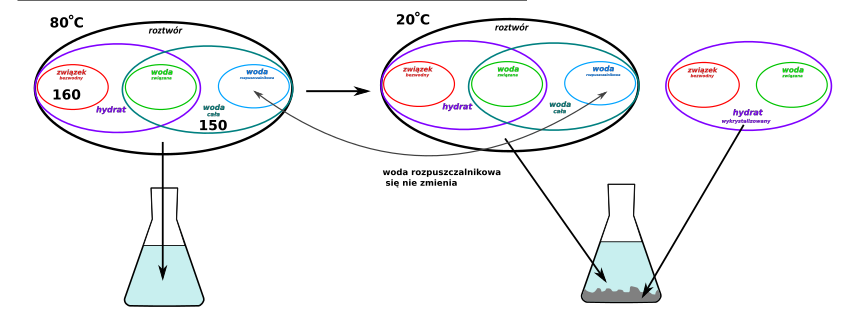
W związku z czym roztwór w temperaturze 80° C warto byłyby rozbić, tak aby poznać jego wszystkie parametry:
Znając wzór hydratu mogę obliczyć jego masę wykorzystując wzory hydratowe oraz masę związku bezwodnego:
\[\frac{m_{zwbezw}}{m_{hydrat}} = \frac{M_{zwbezw}}{M_{hydrat}}\]
\[\frac{160}{m_{hydrat}} = \frac{158}{158 + 5·18}\]
\[m_{hydrat} = \frac{160}{0.637} = 251.1\]
Znając masę hydratu oraz masę soli bezwodnej obliczymy z różnicy masę wody zwiazanej
\[m_{H_{2}O}^{zw} = m_{hydrat} - m_{zwbezw} = 251.1 - 160 = 91.1\]
Graf dla roztworu w temperaturze 80°C prezentuje się następująco:
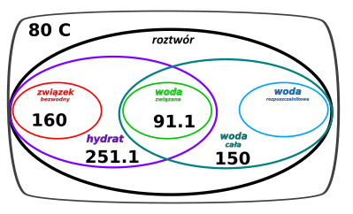
Z łatwością obliczamy masę wody rozpuszczalnikowej jako różnicę mas całej wody i widy związanej:
\[m_{H_{2}O}^{rozp} = 150 - 91.1 = 58.9\]
Masa tej wody jest stała dla obu roztworów w obu temperaturach – hydrat krystalizując zabiera tylko „swoją” wodę
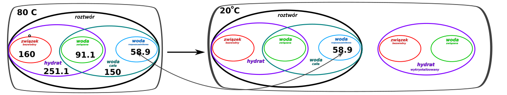
Chcąc obliczyć masę hydratu w roztworze w temperaturze 20°C wykorzystuje wzór na rozpuszczalność hydratu w tej temperaturze
\[R_{hydrat}^{20{^\circ}C} = \frac{m_{hydrat}^{rozp - 20C}}{m_{H_{2}O}^{rozp}}·100\]
Po wstawieniu wartości liczbowych dostaje:
\[176 = \frac{m_{hydrat}^{rozp - 20C}}{58.9}·100\]
\[m_{hydrat}^{rozp - 20C} = 176·\frac{58.9}{100} = 103.7\]
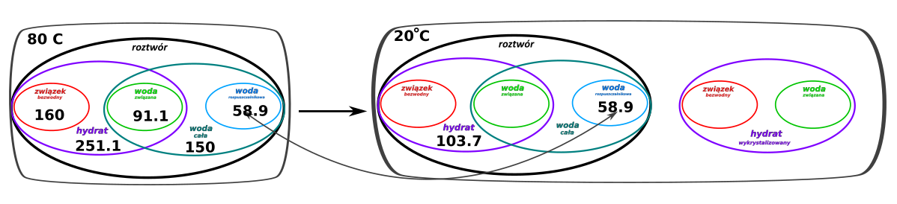
Masa hydratu wykrystalizowanego to różnica mas hydratów w roztworze w 80°C i 20°C
\[m_{hydrat}^{kryst} = m_{hydrat}^{rozp - 80C} - m_{hydrat}^{rozp - 20C} = 251.1 - 103.7 = 148.4g\]